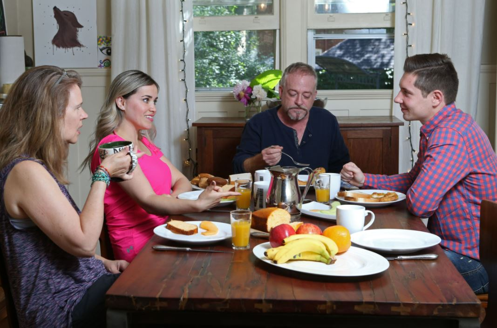

홈스테이 프로그램은 학생들이 파월리버에있는 지역 가족의 일원으로서
캐나다 문화에 대해 배우고 영어를 연습 할 수있는 완벽한 기회를 제공합니다.
학생들은 하루에 세 끼의 식사와 홈스테이 호스트가 제공하는 방을 갖게되며
학생들은 호스트 패밀리의 가정 생활과 활동에 참여하도록 권장됩니다.
Camber College 홈스테이 프로그램 가족은 귀하의 요구를 충족시키기 위해 신중하게 선택됩니다.
홈스테이 가족과 함께 사는 것이 사회적 환경에서 영어를 연습하는 가장 좋은 방법입니다.
우리 가족은 당신을 가족으로 환영하여 경험을 향상시킬 것입니다.
도착한 순간부터 떠나는 날까지 가능한 한 부드럽고 편안하며 즐거운 숙박이되도록 최선을 다하고 있습니다.
